Suggested shortlist
02 · Segoe UI title case
04 · Aptos title case
06 · Tahoma title case
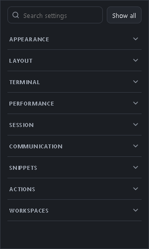
01 · Current baselineSegoe UI · 11 px · 700 · uppercase · 0.8 px tracking
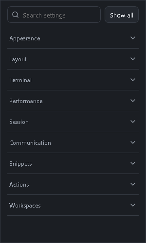
02 · Segoe UI title case12 px · 600 · no tracking
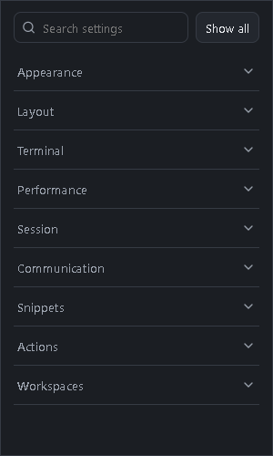
03 · Segoe UI soft12.5 px · 500 · no tracking
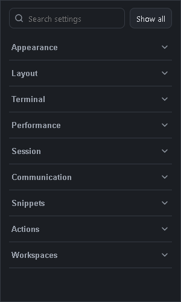
04 · Aptos title case12.5 px · 600 · no tracking
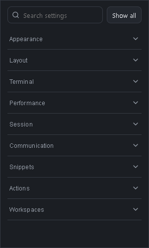
05 · Aptos quiet12 px · 500 · 0.1 px tracking
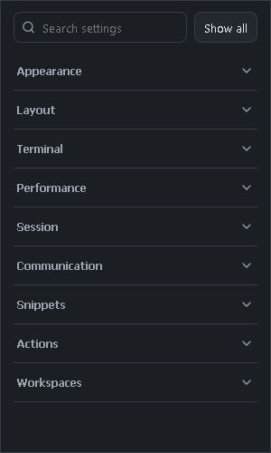
06 · Tahoma title case12 px · 600 · no tracking
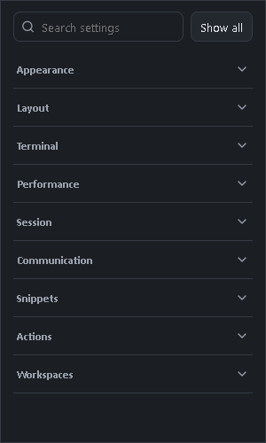
07 · Calibri title case13 px · 600 · no tracking
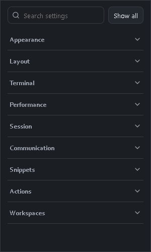
08 · Corbel title case12.5 px · 600 · no tracking
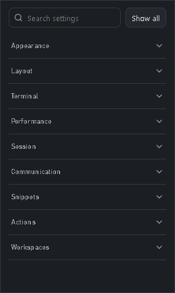
09 · Bahnschrift quiet12 px · 500 · 0.1 px tracking
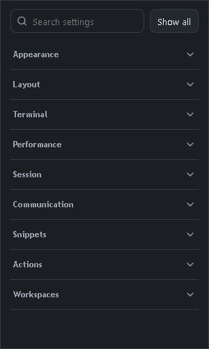
10 · Trebuchet MS title case12 px · 600 · no tracking
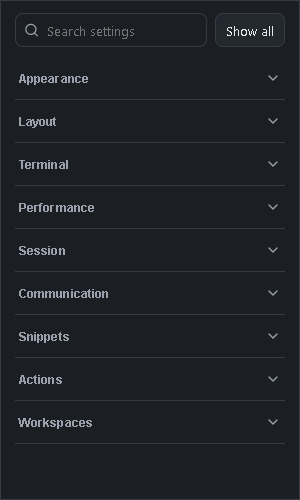
11 · Arial Nova title case12 px · 600 · 0.1 px tracking
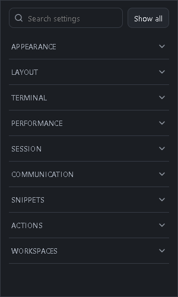
12 · Segoe UI compact caps11.5 px · 600 · uppercase · 0.25 px tracking